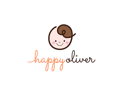

<nav class="navbar">

  <!-- logo -->
  <div class="navbar-brand">
    <a class="navbar-item">
      
    </a>
  </div>
  
</nav>
<mat-toolbar color = "primary">
  <span class = "gap">File</span>
  <span>Edit</span>
  <span class = "filler"></span>
  <span>About</span>
</mat-toolbar>